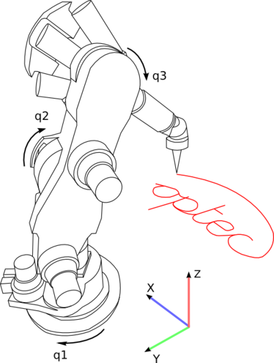
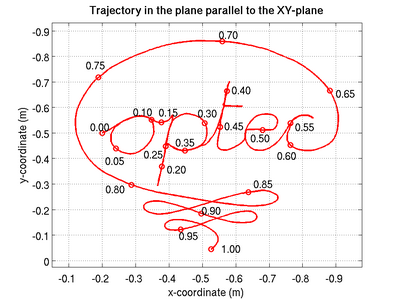
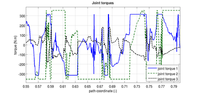
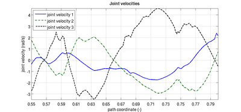

Ph.D.
Software
Personal
Links
|
Practical Time-Optimal Trajectory Planning for Robots: a Convex
Optimization Approach
- Matlab implementation of the convex time-optimal trajectory planning method
applied to the examples found in:
Pfeiffer, F. & Johanni, R., A Concept for Manipulator Trajectory Planning,
IEEE Journal of Robotics and Automation, 1987, RA-3, 115-123.
- Matlab implementation of the convex time-optimal trajectory planning method
applied to the KUKA 361 industrial manipulator carrying out a writing task.
- Zip archive: kuka361.zip
- Video: kuka361.avi
(12 MB. Should work without special codecs)
- Explanation:

Fig. 1: A six-DOF KUKA 361 industrial manipulator performing a writing task.
To illustrate the practicality of the method, it is applied to a
six-DOF KUKA 361 industrial manipulator carrying out a writing task
(Fig. 1). The objective is to write a text on a plane
parallel to the XY-plane (Fig. 1), while keeping the
end-effector oriented in the negative Z-direction at a height of z = 1.2 m.

Fig. 2: The path in the plane parallel to the XY-plane.
The end-effector path parallel to the XY-plane is shown separately
in Fig. 2, where the value of the path coordinate s in [0,1] along the
path is shown in steps of 0.05. The motivation for choosing this type of
path is that it features long smooth segments as well as sharp edges
at the transitions between different character segments. Therefore, a
lot of switching is expected to realize the time-optimal trajectory
such that the grid on which the problem is solved needs to be
sufficiently fine.

Fig. 3: The joint torques as a function of the path coordinate
for the first three axes for the path shown in Fig. 1
The torques for the more heavily loaded first three axes
are shown as a function of the path coordinate s in Fig. 3 (s = 0.55 ... 0.8).
Fig. 3 indicates that a lot of switching is necessary and that the torque for
axis two, which is heavily loaded by gravity, is saturated for a
considerable part along the path and therefore the main limitation on
the acceleration and deceleration ability of the manipulator.

Fig. 4: The joint velocities as a function of the path coordinate
for the first three axes for the path shown in Fig. 1
To explain the torques, it is useful to look at the joint velocities
for the first three axes as a function of the path coordinate, which
are shown in Fig. 4 for s = 0.55 ... 0.8. Until s = 0.66, the motion
of the end-effector is outward such that axis two rotates downward, which
corresponds to a positive joint velocity, while axis three rotates
upward which corresponds to a negative joint velocity (Fig. 1). At
s = 0.66, there is a velocity reversal for axes two and three and from
then on, the end-effector motion is inward and even faster than the outward
motion (Fig. 4). This can be explained as follows. The torque acting on axis
two due to gravity is also downward and thus aids axis two in the acceleration
phase around s = 0.59 ... 0.61. In this phase, the torque of axis two is positive
and saturated to achieve a maximum acceleration. However, because the path
dictates that there must be a velocity reversal for axis two around
s = 0.66, the velocity of axis two needs to be limited, because the
gravity torque acting on axis two also limits the deceleration ability.
It can be seen in Fig. 4 that the velocity for axis two is indeed limited
between s = 0.61 ... 0.64 and that the torque for axis two is both positive
and negative. For s = 0.64 ... 0.66, the torque for axis two is negative and
saturated to achieve a maximum deceleration. Similarly, at s = 0.79, there
is another velocity reversal for axis two and three, which is again dictated
by the path. However, for s = 0.7 ... 0.78 the velocity of axis two and three is
considerably higher, which is partly because the inward motion is over
a greater distance, but also because the gravity torque acting on axis
two aids axis two in the deceleration phase. It can be seen that the
torque for axis two is not saturated during the entire deceleration
phase for s = 0.78 ... 0.8, unlike the acceleration phase for
s = 0.69 ... 0.73. In part, this is also caused by the outward position
of the end-effector, such that axis one requires more torque to decelerate
and that hence, switching between axis two and one is required in the
deceleration phase for s = 0.78 ... 0.8.
|
|


{kind=link}
{kind=link}
{kind=link}
{kind=link}